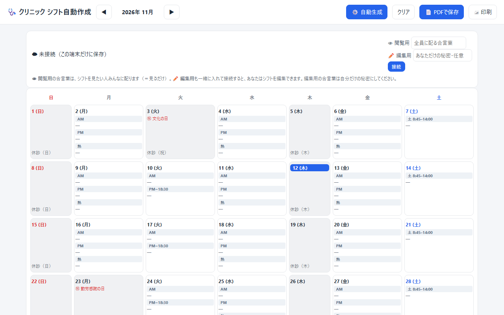
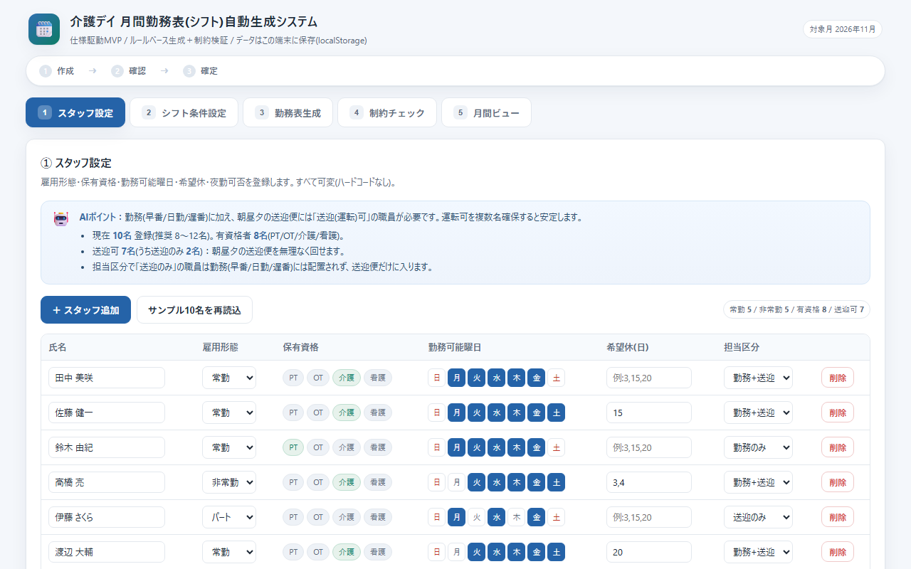
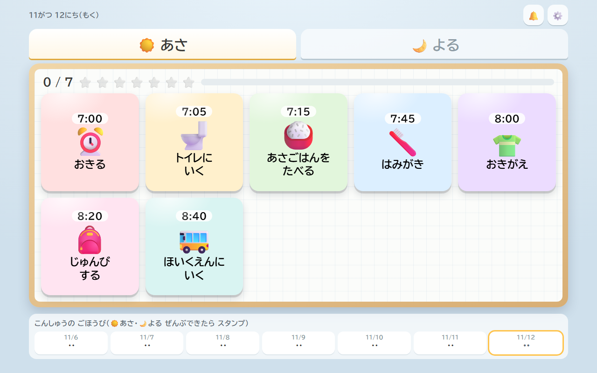
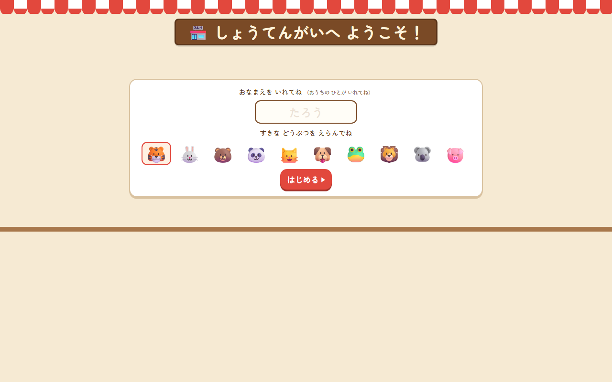
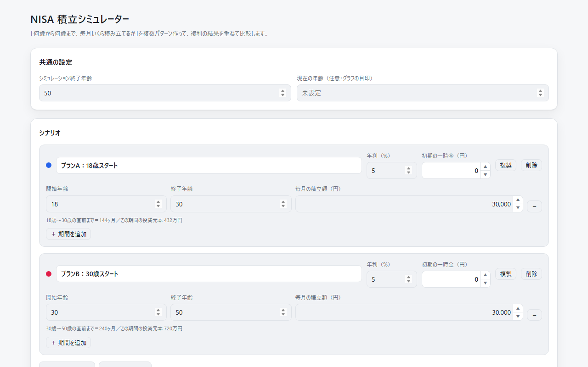

クリニックのシフト自動作成
- きっかけ
- 紙でシフトを作り、写真をLINEで送っていた。扶養内で働く人の時間数に、いつも気をつかっていた。
- 作ったもの
- シフトの自動作成、PDF・印刷。合言葉で「見るだけ」と「編集」を分け、みんなのスマホで同じシフトを見られる。
- 工夫
- 一人ひとりの時間数をひと目で出し、扶養の範囲を気にしやすくした。
- 反応
- シフト作成の担当者から「試しの段階でも、ざっくり時間が分かるだけでかなり使いやすい」。
PORTFOLIO
Megumi Sakamoto元看護師 × Webデザイナー。AIで使う人に寄りそうアプリをつくります。
プログラミングは書かずに、AIへの頼み方で作ります。そのぶん、使う人の話を聞くことと、見た目・伝わり方に時間を使います。
看護師
地元・秋田のクリニックで、看護師として9年間勤務。
看護師
結婚を機に東京へ。看護師として勤務。
デザイン・新人育成
未経験からWebデザイナーに転身。ホームページのデザイン、新人の育成・研修づくり、社内のAI活用に取り組む。
クリニックに単発で勤務
AIの活用に打ち込むため退職。現場で働きながらアプリを作り、使ってもらっている。2026年11月から「omega works」を準備中。
作る前に「どんな一日を過ごしているか」を聞くところから始めます。
困っていること、今のやり方、使う人と場面を聞きます。
2〜3日で動く試作を作り、さわってもらいます。
実際の仕事や生活の中で使い、気づいたことを集めます。
言葉・ボタンの大きさ・決まりごとまで合わせて直します。
実際に使用 は職場や家庭で使われているもの、見本 は架空の施設を想定して作ったものです。










学校と研修で基本を学び、あとは作りながら身につけてきました。
Claude Code の使い方から、アプリの公開までを受講。
ホームページの設計（お客さまの気持ちの順番に沿った組み立て）とデザインを学ぶ。
15本以上のアプリと絵本2冊を、実際に使う人の声を聞きながら作ってきました。